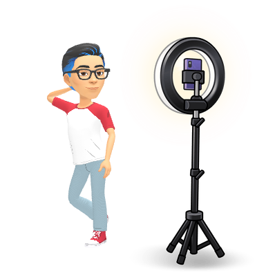

| INICIO |
| INICIO |
 EVIDENCIAS
EVIDENCIAS
Las primeras evidencias son videos tutoriales, uno de como identificar los números primos; otros dos sobre el máximo común divisor y mínimo común múltiplo; y el último del tema de rimas, conteo de sílabas y sinalefas en poemas; estos contenidos son específicos para alumnos de 6° grado de primaria, desde el modelo educativo del Plan de Estudios 2011.
Video de Mínimo Común Múltiplo para 6° grado
Video de Máximo Común Divisor para 6° grado
Durante la construcción del video, se reflexionaron acerca de varios puntos, los más significativos fueron que, aprendí que hay maneras de grabar desde PowerPoint como si fuera presentación y agregar la grabación desde la cámara, y con el video grabado, se organiza la presentación y las animaciones para la reproducción automática con el tiempo de la grabación, incluso pude agregar notas como si fuera un guion a seguir para la presentación y con el video grabado, se grabó desde un dispositivo móvil y se editó por medio de la aplicación de Wondershare Filmora, la cual tuve que aprender a usarla para futuros proyectos similares. El desafío que más presenté fue que al grabar, me ponía nerviosos y cambiaba las palabras o confundía unos términos, para solucionar, regrababa la presentación desde el principio y tomar notas para leerlas en caso de olvidar algún punto importante; otro desafío fue que no contaba con elementos primordiales como lo es una tela verde, para ello se buscó maneras de grabar con un fondo solido para agregar los elementos de transición de la aplicación de Wondershare Filmora. Para aplicarlo en el contexto educativo, sirve para dar una explicación del tema de los números primos, también como una introducción al tema o como guía para cuando estén realizando la actividad.


 © 2026 Manjarrez Mora, José Juan
© 2026 Manjarrez Mora, José Juan